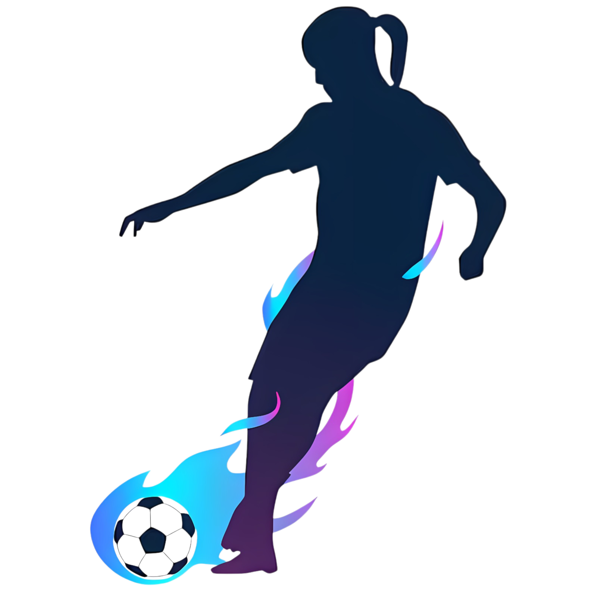
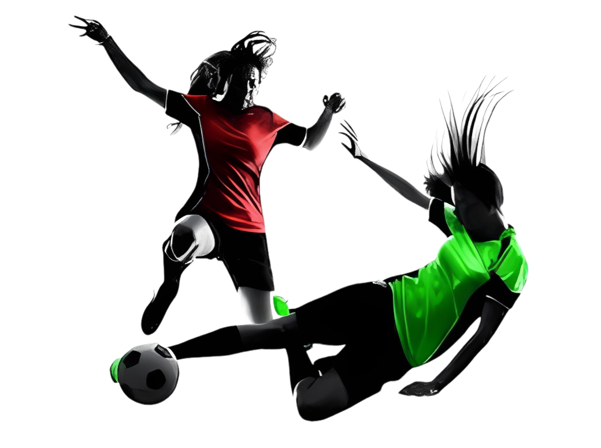
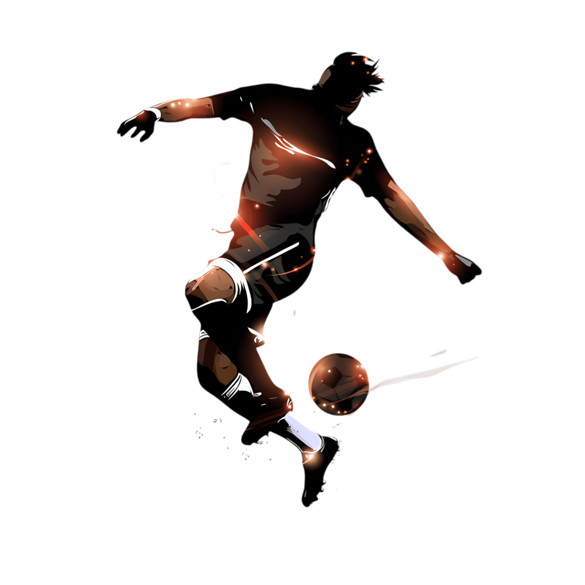

Quiénes Somos
Somos una organización dedicada a promover el microfútbol en la ciudad de Bogotá. Fomentamos la competencia sana y el espíritu deportivo y en equipo, desde la logística y gestión de inscripciones hasta la premiación, asegurando que cada evento sea un éxito tanto para los jugadores como para los espectadores.
Visión
Nuestra visión es ser el referente principal en la organización de torneos de microfútbol en Bogotá, impulsando el deporte y contribuyendo al desarrollo y bienestar de la comunidad deportiva local.
Misión
Nuestra misión es ofrecer eventos deportivos de alta calidad que promuevan el microfútbol, asegurando una experiencia positiva para jugadores y espectadores, y fomentando valores de competencia justa, trabajo en equipo y respeto.
